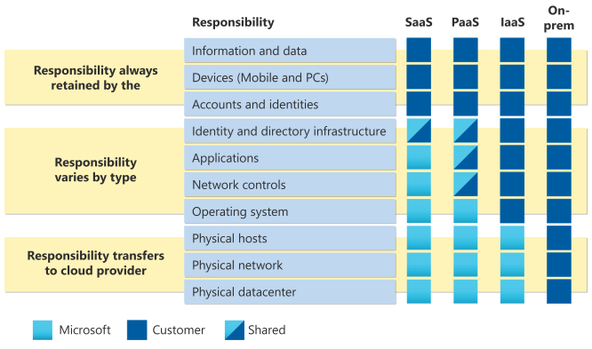

Introducing cloud computing for research
Practical Introduction for Researchers using Microsoft Azure for the MSU Cloud Computing Fellowship
Patrick Bills, Michigan State University
First things first : what is computing
You come to us with each a unique set of experiences with computing, with more or less experience depending on your previous needs.
Computing in Cloud Computing
Part of this fellowship will be examining the 'computing' part of cloud computing.
The application asks the question :
"How can cloud computing help your research?"
I would like to re-frame the question as
"What kinds of computing could help my research?" "How can cloud services support that kind of computing?"
Understanding computational technology in general. For example, while MSU provides email, storage, and high performance computing, it does not provide services for "big data" category, or relational databases for researchers. But you can provision such a service in minutes using the cloud.
Vocabulary
-
cloud computing is marketed to IT professionals and managers. They are who will make the recommendations for checks to be written. Cloud computing must tick their boxes. Services are organized and documented for them, not for us.
-
while cloud computing abstracts away the physical components of a computer but companies use computing concepts as metaphors. see above.
-
many of the capabilities that cloud computing offers could be done by purchasing computer hardware and software, setting it up and manageing it inside your lab. These concepts may help you
What is computer?


Major components of personal computer used in cloud computing
- User software (scripts, user code, etc)
- Base Software
- Operating System
- CPU & Memory
- Computer Architecture (model type)
- Storage - disk
- Storage - external ( accessible via network )
- Network
Open question: qhere is the data?
What is a server?
The 'Client/server' model invented in the 60s is so successful that we use servers for our daily lives and don't think about it (except when the server is down). Knowing how to build servers is useful for research.
This model of computing is important becaues it's at the basis for of cloud computing.
A server is any computer that is running software that listens for messages, and then responds.
- The 'server' is actually the software
- The computer that runs the software is the 'host'
- A 'client' is software sends the message, and receives and interprets the response.
- the form the message can take is the API.
Simple example is a web server:
- client is the web browser
- message = URL which includes address, url paths, and additional parameters (this is only part of the message but is a necessary part)
https://www.amazon.com/Dyvicl-Hanging-Reflective-Woodpecker-Deterrent/dp/B09VXBNTJ1/ref=sr_1_93?brr=1
- response = the code for the web page
- client interprets the code and renders the page.
-
an alternate client could be a script you write that constructs the request, reads in a web page, and extract information from it.
-
the server must be on the network that you can send message to
- some networks block some traffic
- servers that accept messages from the Internet are a major security risk
Data Servers
Example servers that do no use web clients are data servers, for example relational database server.
- message : insert these 5 rows of data
- response: inserted 5 rows
- message: select rows of students in Math 101
- response: (this is fake data randomly generated)
"First Name","Last Name","Email","Level"
"Lucy","Grant","l.grant@randatmail.com","7"
"Emily","Russell","e.russell@randatmail.com","5"
"Annabella","Ferguson","a.ferguson@randatmail.com","8"
etc
Virtual Machines
We will cover this in depth next session but the concept is the basis for cloud computing
Given the strain on IT Departments to provide servers dynamically and the time to provision the hardware to do so, and the fact that many servers are idle much of the time. Hardware was not utilitized a technique of hosting multiple software servers on a single hardware unit was invented.
Server = hardware + [operating systemn + software]
Virtual Servers = [Hardware + Virtualization] + N X [OS + Software]
Virtualization was a necessary conceptual and technological innovation to pave the way for cloud computing and is widely used both on-premise and in the cloud.
Vocabulary: On-prem vs On-cloud
Most institutions like MSU have a combination of on-campus or "on premise" IT and services they have moved to cloud providers.
What is Cloud Computing?
History
Amazon built a revolutionary IT department by investing billions in making that process software-driven in 2000. Any service had to have an API. Teams could order and provision the IT servers they needed via the web forms and did not need to burden the IT staff, individual teams in IT worked with each others services with APIs. They were great a running very large data centers as cheaply as possible, and they sold Target services as a web store.
In a start-up (or a research group!) A software team could spend 70% of their time setting up the 'back end'
They realized that their innovations would help any IT organization and especially internet start-ups like themselves, and that they could sell it.
Their original and main customers are IT departments of organizations.
The IT department at Amazon called all the infrastructor needed to run a massive dot-com "muck" and saw this as a secondary supporting role to application development.
Blog Post from 2006: "We Build Muck, So You Don’t Have To"
NIST defintion of cloud
The NIST definition of cloud computing essential characteristics
- On-demand self-service.
- Measured service: pay for what you get.
- Broad network access: accessible from the internet
- Rapid elasticity: no limits from a customer perspective. This word was invented by AWS
- Resource pooling: single resources serve many customers.
Prior Services that are not cloud computing
Web hosting Focused on providing offered many of these features but was limited in service offerings. I've used a company called dreamhost since early 2000 to provide websites for non-profits and commercial customers, but also email and storage and limited database services.
Co-location Bring your own hardware, eg. Data Center only
Server Rental Servers on the internet you could use for various things, primarily web sites & applications.
IT Accounting Services EDS from the 80s 90s by Ross Perot provided IT and Data services to major corporations primarily GM.
Cloud concepts vs Cloud Providers
Three major cloud providers are in a constant arms race to provide the same tick-boxes to capture the large contracts (e.g. Azure vs. Amazon competed for a $10B defense contract): Azure, Amazon Web Services and Google Cloud Platform
Many others provide Cloud : Oracle, IBM, Salesforce,
Many provide 'servers' that have been around before it was called cloud: Rackspace,
Thousands of companies of specialized services to support the majorvendors (e.g. for billing, management, security, etc)
There is an open source version of cloud computing called "OpenStack" used by universities to build their own private or non-profit clouds. MSU/UMich uses that for the Osiris project. Indiana University uses it for their machine called "JetSteam"
Services on the Cloud vs Cloud Providers
Google Search vs Google Docs vs Google Cloud Platform vs DIY
vs.
Restaurant vs Box Preapred food vs. Cooking from scratch vs. Farming
to push the analogy further, what would a growing supply company provide to a farmer vs a gardener? As we begin, we are gardners, not farmers.
Cloud for Research
What are the benefits from research perspective for cloud computing?
- Custom: can create customized resources only when you need it
- On-demand: can run ad-hoc computations on those on-demand resources
- Reproducible: a computation can be re-run as needed, meaning cloud resources can be easily re-recreated to re-run your computations.
- Cost effective: unlike commerical applications, more users does not mean more revenue. Budgets are fixed and the pay-as-you-go model requires vigilance to not over-spend.
- Others?
NIST defintion of cloud: Service Level Model
The NIST definition of cloud computing defines service models * "service levels" are only a model (or abstraction) for discussion cloud computing, widely used in the IT fields. * "X as a service" where X is some aspect of IT, usually along the axis of customer responsibility.
- Infrastructure as a service: Replacement for hardware but perhaps not software levels. This is often compared to making a data center and uses many of the terms. You need understanding of computing architecture as these services
- Platform as a service: Everything in between: pre-configured and managed infrastructure
- Software as a service: Little to no configuration is needed but these system may be programmable and integrated with other services. E.g. Office 365, Google Drive
About this model * the model is abused like all concepts or acronyms in IT: * How well does this model apply to the services that cloud providers give us? Like the species concept in biology, it's not always cut and dried, but can be thought of as a spectrum
For many cases, the "plaform" is the sweet-spot for researchers who do not have time to aquire the expertise to manage low-level infrastructure and need something more flexible and programmable. These are often more expensive than DIY infrastruture, but are faster to provision and provide security controls.
Cloud "Services" and the Packaging of Open Source Systems
Case Study on Open Source system as Cloud service: MySQL
Open source, free Relational database, e.g. SQL. Relational databases store tabular, linked data. Used by some bioinformatics packages (e.g. https://orthomcl.org/orthomcl/app) and millions of websites.
- project: https://www.mysql.com/products/community/ and https://mariadb.org/
- DIY on Azure instructions (eg Iaas): someone's DIY Mysql - don't follow these, they are old and may not work, just an example of the steps involved
- Azure MySQL Service (e.g PaaS): Azure Database for MySQL
- AWS MySQL Service: Amazon RDS for MySQL
- Google MySQL Service Cloud SQL
-
other companies, such as Aiven for MySQL
-
Spin-offs: Amazon also offers AWS Aurora which is a cloud scale database service that is MySQL-compatible see Amazon Aurora Paper
What would a "SaaS" offering for tabular data look like? A "Google Docs" for Databases? Perhaps https://www.airtable.com/ ?
Learning how to learn about cloud
You may have looked at the various websites and poked around the web, and found it's just not clear at all how cloud computing may be helpful to you, even though it all sounds great. The challenge for researchers learning about cloud is that most cloud documentation for isn't written for you.
Cloud training and documentation are mostly written for IT professionals like system admins and architects, software developers, business people, and agency managers. Researchers tend to be a little of all of those things.
Training materials ofen have an embedded conceptual models of computing, and this model depend on your approach. Our goal as researchers is to get our work (or the work of our lab) done, not to build systems used by hundreds of people or for business purposes. That can make it difficult to decipher which kind of cloud service will work best for your use case. As Dr. Parvizi writes, cloud is very different from using traditional research-oriented technology like workstations or HPC. There are hundreds of services to choose from but we find many researchers will reach for the conceptually straightfoward path of creating cloud computers and install what they need. Our goal for this fellowship is to provide context and background, and help you explore some of the so-called "cloud native" technologies like "serverless" systems that let you run your scripts without dealing with operating system installs.
The target audience for most cloud companies are IT professional building IT systems for public or institutational use. Let's call this the "Systems" perspective:
- built for someone else to use, e.g. a service
- must be available at scale and ultimately reliable
- documentation is in terms of historic IT systems house in on-premise corporate data centers
- "production" systems
- often very concerned with authentication and security
The second audience are corporate software engineers, or dot-com or app software companies. We'll call this the "developer perspective
- need to easily create systems to run their software for demonstration and testing
- complete interelate
- goal is a robust sytem that can handle many users, e.g. the performance of a "production" systems are often top of mind
And finally most closely related to your work are data science, "machine learning" or an "analytical" perspective
- systems to achieve computation.
- May work like our local HPC
- systems built only for small work groups, not for public
- can still scale
- but must be reproducible to document methods
- even this documentation can quickly veer off in to building production systems for companies to re-run inference say many times a data or with a constant stream of corporate data
What documentation is available for researchers?
There are general, conceptual introductions and dicussions for academics.
- https://cloud4scieng.org/ Book and website from Ian Foster and Gannon (U. Chicago), the text used for this fellowship.
- https://cloudmaven.github.io/documentation/ from the eScience institute of the University of Washington. It doesn't appear to be maintained but may have some good resources. Original github repositories are https://github.com/cloudmaven
- https://cloudbank-project.github.io/cb-resources/ Seems to be a succesor to the 'cloudmaven' documentation above as members from cloudmaven are contributing here.
Caveats and help
As part of this fellowship, our goal is to help you translate documentation written for the systems and developer perspectives into a research perspective.
- The cloud services themselves are always changing, even slightly, making technology-specific tutorials obsolete in months. For example last year Azure had a "Notebook Service" for running Python notebooks, and now there is this in place of the regular documentation: What happened to Azure Notebooks?
- There are new services and bundles created all the time that may be competing or superior choices for doing research
- If you are unsure, ask us. See the contact page or use our Teams channel. During the Cloud Computing Fellowship we are here to provide some answers, context for what you are seeing, or possible directions to explore.
- Cloud companies have help desks and many resources for anyone using their services or potential customers and we may be able to connect you with those.
The Interfaces to Cloud
A defining aspect of cloud computing is that it's "on-demand" hence creation of resources must be automated or "scriptable." All Cloud providers have various 'interfaces' to their services that include both programmatic and web-based. We will talk about about how these in detail next sesion, but at the end of this session we will do a walk through of using the Azure portal, which is also an exercise for next session.
Using workflow and computational thinking
Karl Popper stated that "non-reproducible single occurrences are of no significance to science" ( K Popper, "The Logic of Scientific Discovery", English translation from Routledge, London, 1992, p. 66.) and this is a significant issue for research computing and one of much academic work.
To enhance reproducibility in your own work, consider documenting all the steps needed for create the environment to run your computation. For many on-premise academic systems (e.g. the MSU HPCC), we depend upon the system administrators to create that environment, but we may install and configure all the software we need to run our code. Workflow thinking can apply to the scienfic domain itself (e.g. "Principles for data analysis workflows" https://journals.plos.org/ploscompbiol/article?id=10.1371/journal.pcbi.1008770 ) and to the provisioning of the cloud computing environment. That is, we may use a workflow system for creating all the cloud stuff we need, and then a different workflow system that runs on that cloud stuff. One example is we may create an HPC system on Azure using templates and then launch the Slurm scheduler on that HPC to run our jobs. (note the complexity of running our own HPC is beyond the scope of this fellowship and used as an example only)
A major advantage to using workflows or code for provisioning your cloud computing components is that you can turn them off and delete them when you are done, and restart when needed. This can dramatically save on costs . This does not necessarily have to be a complete programming system, but some combination of well written instructions and a collection of scripts so that your colleague (or yourself 6 months from now) can recreate everything you need.
About Cloud Security
Security and Risk management is an important issue even for researchers who's data may not be sensitive or even open source. Attackers may use the services you create to launch attacks on other services, leaving you liable.
Finding a readable list of security recommendations for cloud computing is a challenge for all the reasons outlined above. Our textbook has a nice chaper outlining cloud security
The "Shared responsibility" model for cloud computing takes a model of computing components, and shows how much of each component the user is responsible for security.
- Your computer, operating system, software
- security is your responsibility
- this includes the room in which the computer sits
- << cloud computing >>
- Office 365 or Google Docs:
- other than password, security is all of their responsibility
If your computer is a server, your responsibility just increased 100X as these are primary targets for hacking. Consider each component of a server to be a point of vulnerability.
 Microsoft Model of Shared Responsibility for Cloud Computing
We will come back to this model as we gain deeper understanding of research computing on the cloud.
Costs and Budget overview
We will cover the details of pricing, examine costs, and controlling costs in future sessions. Each participant has a budget for their Azure resources that they should stay under. If you need to use Google or AWS we need to make additional arrangements but your first step would be to acquire a free starter account with these companies (e.g. using a gmail address).
Briefly:
- Costs are more than just dollars for services. Consider
[Total Cost] = ( $ + Time + Risk ) [Total Time] = ( development time + wait time + compute time )- Risk is rarely non-significant. Never say "I won't get hacked..."
- In the Service level spectrum, the higher level "platform" services may have higher monetary costs but often reduce time and risk
HPCC vs Cloud
Dr. Parvizi's white paper outlines the challenges of adapting HPC workflows to cloud computing.
The HPC is amazing effective at running all kinds of systems at very list cost, if any, to MSU researchers. Many systems not designed for HPC can be adjusted to run in that environment. However, just like many workflows are difficult to port from HPC to cloud, some cloud workflows are difficult run on HPC (but never say never):
- Big Data systems (see magpie project)
- Long-running Data Systems like database servers
- Web-based applications (see on-demand project)
- Containers (see singularity project)
Acknowledging bias in access to cloud computing across research cultures
Additional comments from instructors and organizers
Source Materials
https://softwaresim.com/blog/introduction-to-cloud-computing-for-research/